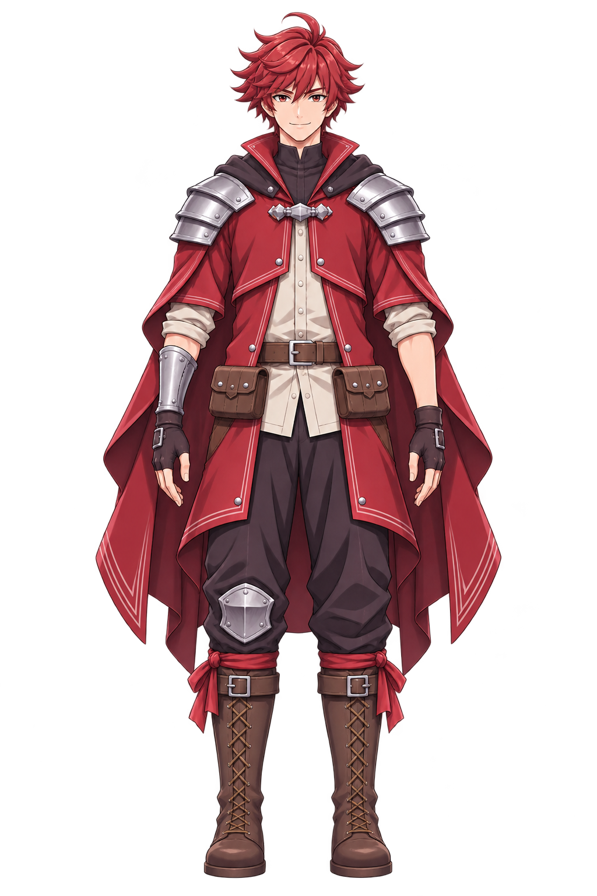
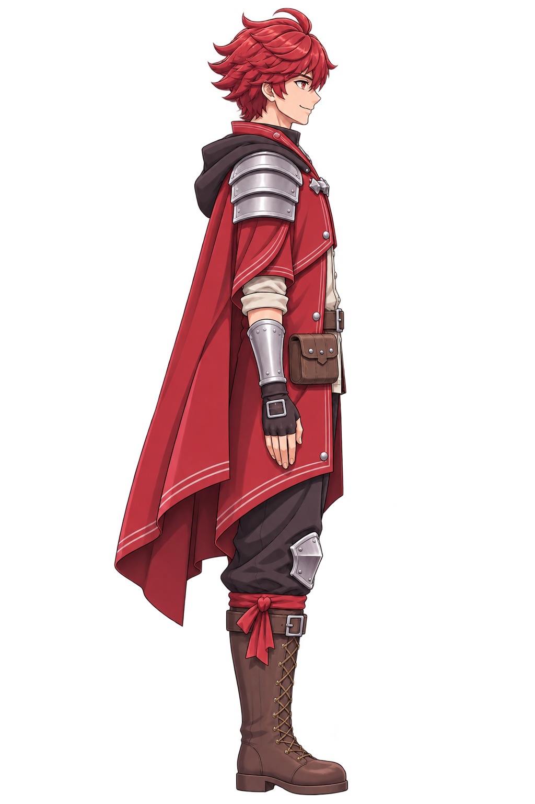
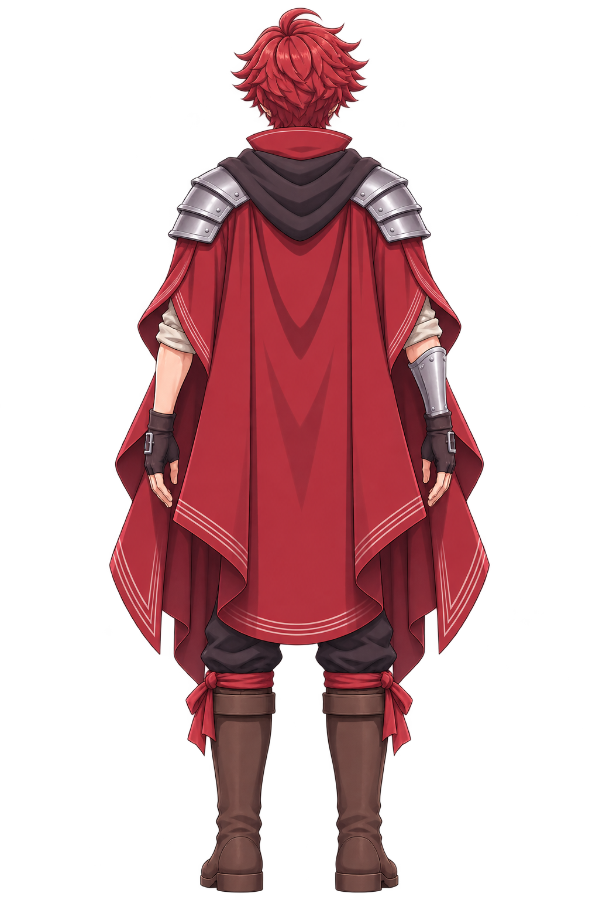
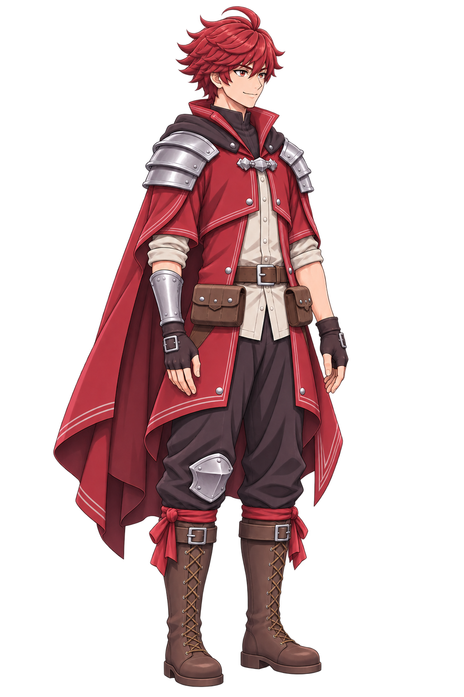

붉은 머리 모험가 · 리모델링 4방향
같은 남성형 캐릭터의 정면·정측면·후면·3/4 사선입니다. 붉은 머리와 의상, 비대칭 은색 방어구, 가죽 장비 구성을 유지했습니다.
각 파일은 1024 × 1536 투명 PNG입니다. 이 화면은 원본 PNG를 직접 읽습니다. 위의 나란히 보기는 화면에 맞춰 표시하며, 아래 검수 창은 100% 원본 배율을 지원합니다.








원본 배율 상세 검수
100%는 이미지 1픽셀을 CSS 1픽셀로 표시합니다. 200%는 픽셀을 확대하는 관찰용 보기입니다.